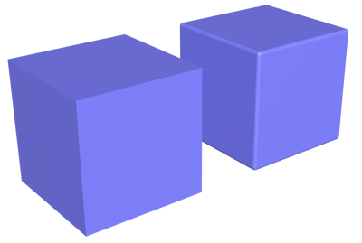
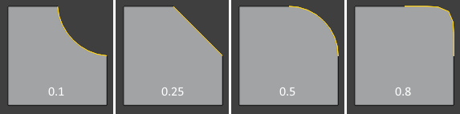

Bevel¶
Tham khảo
- Mode:
Edit Mode
- Menu:
,
- Shortcut:
Shift-Ctrl-B (Bevel Vertices), Ctrl-B (Bevel Edges)
Công cụ Bevel làm mượt các góc và cạnh. Điều này giúp vật thể trông thực tế hơn -- rốt cuộc thì không có gì trong đời thực lại sắc nhọn một cách vô hạn.

Các khối lập phương không có và có bevel.¶
Xem thêm
Bevel Modifier thực hiện việc này một cách không phá hủy.
Cách dùng¶
Chọn một hoặc nhiều vertex, edge hoặc face, sau đó nhấn Ctrl-B để làm mượt cả cạnh lẫn góc, hoặc Shift-Ctrl-B để chỉ làm mượt góc. Di chuyển chuột để tăng bán kính bevel và lăn Wheel để đặt mật độ cho hình học mới. Cuối cùng, nhấn LMB/Return để xác nhận hoặc RMB/Esc để hủy.
Tùy chọn¶
Khi công cụ đang hoạt động, các cài đặt hiện tại được hiển thị ở phía trên của 3D Viewport. Dùng các phím tắt (cũng được hiển thị trong thanh trạng thái) để chọn một cài đặt, rồi di chuyển chuột hoặc gõ một số để thay đổi nó. Khi di chuyển chuột, giữ Shift để thay đổi giá trị chậm hơn nhằm chính xác hơn, hoặc giữ Ctrl để snap theo các bước gia tăng thô.
Sau khi xác nhận bằng LMB, các cài đặt vẫn có thể được thay đổi trong panel Adjust Last Operation.
- Affect V
- Vertices
Bevel các vertex được chọn, giữ nguyên các cạnh.
- Edges
Bevel các cạnh được chọn, cùng với các vertex nơi ba cạnh trở lên gặp nhau.
- Width Type M
Ý nghĩa của cài đặt Width. Trong các ví dụ dưới đây, Width được đặt thành 50% cho Width Type "Percent" và thành 1.0 cho các kiểu khác.
- Width A
Kích thước/bán kính của bevel. Ý nghĩa chính xác phụ thuộc vào Width Type.
Ghi chú
Khi nhiều cạnh được bevel cùng lúc, đôi khi không thể làm độ rộng khớp với định nghĩa trên ở tất cả các cạnh cùng một lúc. Trong những trường hợp như vậy, Bevel sẽ cố cân bằng. Đôi khi tắt Loop Slide (xem bên dưới) có thể giúp Bevel đạt được độ rộng như quy định dễ hơn.
- Segments S
Mật độ của hình học mới. Giá trị cao hơn sẽ cho kết quả mượt hơn.
Khi công cụ đang hoạt động, cài đặt này có thể được thay đổi bằng Wheel ngay cả khi nó không được chọn.
- Profile Shape P
Một số trong khoảng từ 0 đến 1 điều khiển hình dạng của profile (hình chiếu cạnh của mỗi cạnh được bevel).

Nếu Miter Outer hoặc Miter Inner được đặt thành Arc, giá trị này cũng điều khiển hình dạng của các miter.
- Material Index
Chỉ số (tính từ 0) của material slot cần gán cho các face mới tạo. Nếu đặt thành -1, các face mới sẽ kế thừa material của những face lân cận.
- Harden Normals H
Khi bật, gán custom split normals cho các face mới tạo để chúng hiển thị được shade mượt mà không ảnh hưởng đến phần còn lại của mesh.
- Clamp Overlap C
Ngăn các cạnh được bevel bị vượt quá đầu mút của các mặt lân cận.
- Loop Slide
Quyết định các cạnh trong mới vuông góc với cạnh được bevel hay khớp với hướng của các cạnh trong hiện có.
- Mark
- Miter Outer O
Khi bevel ba cạnh trở lên nối vào cùng một vertex, trong đó hai cạnh tạo thành một góc lớn hơn 180° ở phía có các face, Outer Miter quyết định việc có tạo thêm hình học ở góc đó để tránh bị chụm nhọn hay không.
- (Miter) Inner I
Khi bevel hai cạnh trở lên nối vào cùng một vertex, và có các cạnh tạo thành góc nhỏ hơn 180° ở phía có các face, Inner Miter quyết định việc có tạo thêm hình học ở những góc đó hay không.
- Spread
Kích thước của Inner Miter khi được đặt thành Arc. Giá trị này cũng ảnh hưởng đến Outer Miter.
- Intersection Type N
Kiểu hình học được tạo tại các điểm nơi ba cạnh bevel trở lên gặp nhau.
- Grid Fill:
Lấp đầy khoảng trống giữa các cạnh bằng hình học nối chúng một cách mượt mà.
- Cutoff:
Đóng nắp mỗi cạnh bằng một mặt phẳng.
- Face Strength
Quyết định có áp dụng Face Strength cho các mặt liên quan đến bevel hay không. Có thể dùng kết hợp với Weight Normals Modifier (khi tùy chọn Face Influence được bật).
- None:
Không đặt face strength.
- New:
Đặt face strength của các face mới dọc theo cạnh thành Medium, và face strength của các face mới tại vertex thành Weak.
- Affected:
Ngoài những gì được đặt cho trường hợp New, còn đặt các mặt liền kề với face mới có strength là Strong.
- All:
Ngoài những gì được đặt cho tùy chọn Affected, còn đặt tất cả các mặt còn lại của mô hình có strength là Strong.
- Profile Type Z
Quyết định hướng đi của các cạnh được tạo dọc theo mỗi cạnh bevel.
- Superellipse
Dùng profile tự động sinh ra dựa trên cài đặt Profile Shape.
- Custom

Widget của custom profile.¶
Dùng profile tùy chỉnh như được định nghĩa trong Widget Curve ở panel Adjust Last Operation. Đường cong là hình chiếu cạnh của một bevel giữa hai face gặp nhau vuông góc; vùng tô đậm biểu diễn phần bên trong của mesh.
- Presets
Các preset Support Loops và Steps được tạo động tùy vào số Segments của bevel. Nếu số segment thay đổi, preset sẽ phải được áp dụng lại.
- Sample Straight Edges
Quyết định có lấy mẫu profile ở giữa các đoạn cong thẳng tuyệt đối (đường thẳng nối hai control point có handle type Vector) hay không. Tùy chọn này tắt theo mặc định, vì thông thường chỉ cần lấy mẫu profile tại chính các control point là đủ.
- Sample Even Lengths
Theo mặc định, mỗi đoạn profile (phần giữa hai control point) nhận cùng một số điểm lấy mẫu. Khi bật tùy chọn này, các điểm lấy mẫu thay vào đó được phân bố đều dọc theo toàn bộ chiều dài của profile.